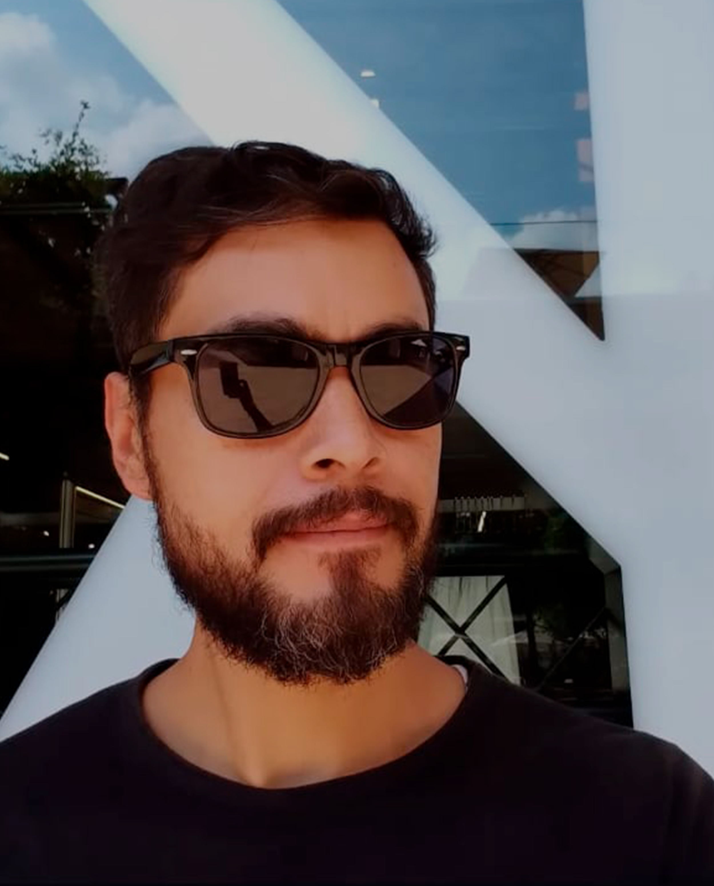

"Construyo en la frontera donde el código se vuelve lienzo y el cómic se convierte en interfaz."
Esa frontera tiene nombre: Grafissto Studios, fundado en 2020 con una certeza simple: los mejores proyectos digitales y narrativos nacen cuando el diseño, la tecnología y las historias se fusionan en vez de dividirse. Desde CDMX, he construido webs, sistemas, identidades visuales y universos de ficción para clientes y proyectos propios.
Mi formación viene desde el diseño, cruza la experiencia de usuario (UX/UI Design), el desarrollo frontend,
la ilustración y la escritura de guión. cada proyecto que hago es único y especial.
Actualmente me dedico al diseño de productos digitales y al desarrollo de Comics: Neo Tenochtitlán, Noir
Secret y el Proyecto Cancún.
El lienzo sigue creciendo y El código, también.
Grafissto Studios
Creador y guionista de Neo Tenochtitlan, un trepidante thriller de ciencia ficción cyberpunk. Actualmente desarrollando y escribiendo Noir Secret y El Proyecto Cancún, dos universos inmersivos diseñados para cautivar al público mediante la fusión de narrativa profunda y experiencias visuales únicas.
Grupo Rosedal
Lideré el diseño e implementación end-to-end de un sistema de gestión de eventos (plataforma web + app Android nativa). Diseñé la arquitectura de información para integrar gestión financiera y módulo de eventos. Reduje el 100% de discrepancias en pagos y disminuí 65% el tiempo de coordinación.
Whte Labs (Blxck Pay)
Diseño de producto para Blxck Pay, fintech B2B2C de nómina digitalizada. Diseñé el módulo empresarial y de usuario final, y desarrollé el Design System completo en Figma. Reduje 73% los casos de fraude y aumenté 40% la adopción digital.
Grupo Fi
Solución móvil para gestión de microcréditos y cobranza en campo. Diseñé flujos optimizados para captura de pagos, validación de identidad y sincronización offline. Reduje 85% las discrepancias en pagos.
Grupo Salinas (Italika, Banco Azteca, TV Azteca, Zeus)
Diseñador embebido trabajando en paralelo sobre cuatro productos. Rediseño de onboarding, módulos de ventas, arquitectura de información y flujos interbancarios para mejorar la adopción digital y usabilidad.
Ciudad de México
Fundación de Grafissto Studio con la convicción de que el diseño, la tecnología y la narrativa son disciplinas que se potencian mutuamente. Creación de los primeros universos narrativos.
Independiente + Agencias (DDB, IQsec)
Optimización de plataformas digitales, estandarización de componentes UI y desarrollo web (HTML/CSS/JS, WordPress). Mejora sustancial en la coherencia visual y satisfacción del cliente para marcas y corporativos.
Cine Premiere
Diseño de gráficos y mockups para el portal web de Cine Premiere.com.mx
Facultad de Artes y Diseño (U.N.A.M.)
Licenciatura con doble especialidad en Ilustración y Diseño Web. Bases académicas de composición visual, narrativa gráfica e interacción.
Escuela Nacional Preparatoria 6 (U.N.A.M.)
Formación académica media superior.
Disponible para proyectos freelance, colaboraciones creativas y oportunidades laborales.